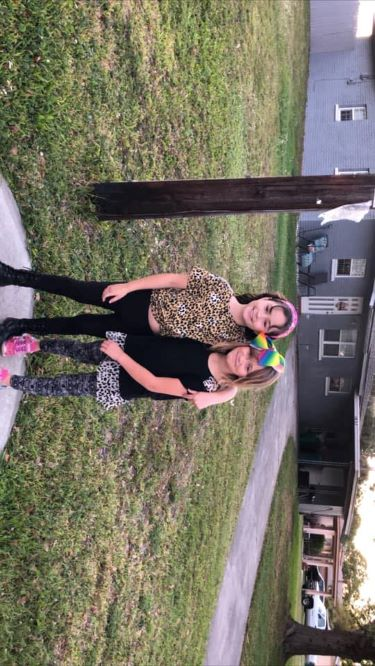

My Biography |
||
|
Hello there, My name is Chloe Farmer, and I am here to tell you a few things about myself. Here are some key facts about myself; I am a young mother to a beautiful 1-year old girl (Lola), studying Technical Communications at UCF, and own a home in a small town in Florida. Some of my hobbies include roller skating, playing Super Mario Deluxe, and spending time with my sweet Lola. Along with my daughter, I have a step-daughter and niece. I am also a proud animal lover; with 3 animals of my own. Two male kittens, and one big dog. The dog's name is Jaxy boy, and he loves to hang out with his sister Lola. The cats are name Starsky & Hutch; they are maine coone and domestic short hair mixed. I was born and raised in Florida; it is where I met my spouse, am earning my degree, and birthed my daughter. Someday, I would like to move to another tropical location. Somewhere remote, like Hawaii. I am on track to graduate with a bachelors in Technical Communications by the year 2021, and I hope to use this degree to secure a position as a Technical Writer. The best characteristic of my studies, and my future career, is producing reader-based documents for clients. I find it immensely satisfying to help other people understand complicated topics. |
||
Home |